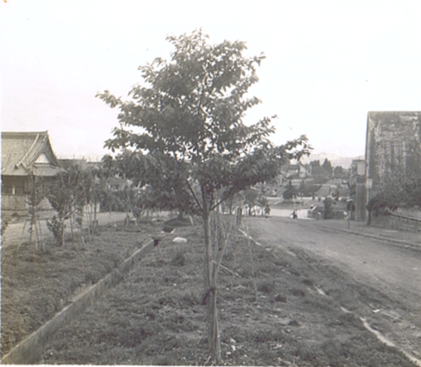

リンゴの木の神様とその弟子達-後記その1-(2015年3月9日記す)
笠原正雄
笠原正雄
このお話の源流は、信州の美しい町、飯田市で起こった“りんご並木の事件”にあります。
この事件のことを新聞、あるいはテレビで知ったのは、もう半世紀以上も前のことで、私が、ある大学の工学部電気工学科に在学中の時でした。
この事件を知った瞬間、私の心境は、PART2にある与平小父さんと巡査さんの間で交わされた会話、
与平小父
「おい！とんでもないことになったぞ！」
巡査さん
「とんでもないことです。本当に。子供達が、心をこめて育てたリンゴを持っていくなんて……」
で、表すことができるでしょう。
私達電気工学科40名の学生は、4回生になった5月に、会社見学旅行を実施することを決めました。
クラスの世話役さんが決めた旅行のスケジュールは、「佐久間ダム」を見学した後、東京の電気系数社を訪問するという予定でした。
“えっ！、佐久間ダムは、飯田市の近くにあるのではないか！”
“是非この機会に飯田市を訪ねて、リンゴ並木をこの目で見たい”
私は、胸の高鳴りを覚えました。是非、訪ねてみたいという気持を押えることは、できませんでした。
見学旅行の世話役の友人に、私の胸の中を打ち明けましたところ、世話役さんは
「リンゴ並木を見たいだって！？ 如何にも笠原らしいなぁ。別行動認めるよ。我々は、東京の宿で待っているからね」
と認めてもらうことができました。
夕刻、飯田市の旅館に到着して、一泊。翌日の午前中、りんご並木とその周辺を歩き回り、正午過ぎの電車に飛び乗って、夕方遅く、東京の宿で待つ友人達と合流しました。
飯田市を、別行動で立ち寄った私でしたが、やはり若かったのでしょうね。リンゴの世話をされている子供達の学校を訪ねて、お話をさせていただくという着想には全く到らず、一人、物思いにふけりながら、午前中、りんご並木を眺めていたと思います。
『りんごの神様とその弟子達』のお話は、その後実に数十年、私の頭の中で、絶えることなく展開されていたお話です。その間、私の心の中の世界に飛び込んできた、イサムや章介そして三郎達、沢山の子供達が、りんご並木の回りで元気一杯に遊び、そして成長していきました。半世紀近く、私の心の中にあったお話を、昨年12月に、執筆し始めました。
ここに本日、結びの章、PART11を、脱稿いたしました。
時折り、このお話の世界を訪ねて下されば、私にとって、これに過ぎる喜びはありません。
この時に、私のカメラに収まった、若かりし頃のリンゴ並木（多分7,8才？）の写真（当時は白黒写真が普通）を以下に示しましょう。

飯田市のリンゴ並木
（半世紀以上も前の写真です）